高中物理核心概念 · 公式 · 例题
精选高考真题与经典模拟题，点击"看解析 / 查看答案"验证你的思路。
A. 红光偏折最大 B. 紫光在玻璃中速度最大 C. 红光在玻璃中速度最大 D. 各色光出射方向均平行于入射方向
A. 任意角均可 B. 入射角 ≤ $\arcsin\!\left(\dfrac{n_2}{n_1}\right)$ C. 端面入射角 ≤ $\arcsin\!\left(\sqrt{n_1^2-n_2^2}\right)$ D. 与角度无关
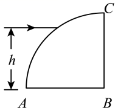
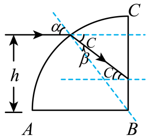
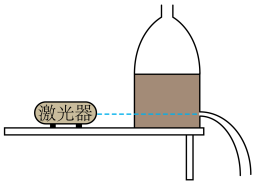
A. 减弱激光强度
B. 提升瓶内液面高度
C. 改用折射率更小的液体
D. 增大激光器与小孔之间的水平距离
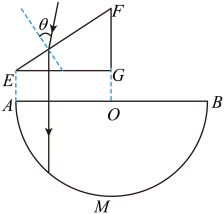
（1）求 $\sin\theta$；
（2）以 $\theta$ 角入射的单色光线，若第一次到达半圆弧 $AMB$ 可以发生全反射，求光线在 $EF$ 上入射点 $D$（图中未标出）到 $E$ 点距离的范围。
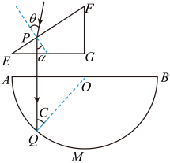
A．入射角 $\theta$ 小于 $45°$
B．该介质折射率大于 $2$
C．增大入射角，该单色光在 $BC$ 上可能发生全反射
D．减小入射角，该单色光在 $AB$ 上可能发生全反射
(1) 求玻璃砖的折射率；
(2) 在该横截面沿圆弧任意改变入射点的位置和入射方向，使激光能在圆心 $O$ 点发生全反射，求入射光线与 $x$ 轴之间夹角的范围。
A. 变大 B. 变小 C. 不变 D. 先变大后变小
A. 干涉和衍射都说明光具有粒子性 B. 泊松亮斑是光的干涉现象 C. 双缝干涉条纹等间距，单缝衍射中央亮纹最宽 D. 只有激光才能发生衍射
A. 光的干涉 B. 光的衍射 C. 光的偏振 D. 光电效应
A. 均变明亮 B. 均变灰暗 C. 亮度均无变化 D. 左镜片的变暗，右镜片的变亮
不同波长的光各自独立形成干涉条纹，但不同色光之间不能相互干涉。两套条纹叠加时，会在某些位置出现亮纹重合（同色或复色亮纹）。
A. 蓝光与红光之间能发生干涉形成条纹
B. 蓝光相邻条纹间距比红光相邻条纹间距小
C. 距中央亮纹中心 1.32 mm 处蓝光和红光亮纹中心重叠
D. 距中央亮纹中心 1.98 mm 处蓝光和红光亮纹中心重叠
将同一束光分成两束以获得相干光源的方法有两类：分波前（如杨氏双缝、双像/洛埃镜）与分振幅（如薄膜、迈克耳孙）。本考法聚焦分波前中"平面镜成虚像等效为两相干光源"的情形：实像 $S$ 与虚像 $S'$ 关于镜面对称，相当于两缝间距 $d=2a$。
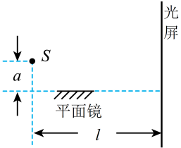
A. 光屏上相邻两条亮条纹的中心间距为 $\dfrac{l}{2a}\lambda$
B. 光屏上相邻两条暗条纹的中心间距为 $\dfrac{l}{a}\lambda$
C. 若将整套装置完全浸入折射率为 $n$ 的蔗糖溶液中，此时单色光的波长变为 $n\lambda$
D. 若将整套装置完全浸入某种透明溶液中，光屏上相邻两条亮纹中心间距为 $\Delta x$，则该液体折射率为 $\dfrac{l}{2a}\cdot\dfrac{\lambda}{\Delta x}$
波从一种介质传到另一种介质时，频率不变、波长和速度按介质性质改变。在介质分界面上波会反射，反射波与入射波满足相同频率，可发生相干叠加。本考法聚焦"波源在介质 I 中，介质分界面反射波 + 折射波"综合题型，需要联合运用波速/波长关系、Snell 定律、几何路程差 + 相干条件。
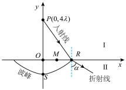
A．介质 II 中波的频率为 $\dfrac{2v}{\lambda}$
B．$S$ 点的坐标为 $(0,-2\lambda)$
C．入射波与反射波在 $M$ 点相干减弱
D．折射角 $\alpha$ 的正弦值 $\sin\alpha=\dfrac{3\sqrt{2}}{5}$
光学显微镜观察样品时，盖玻片底部 O 点的样品等效为点光源。盖玻片折射率较大，从盖玻片到空气的入射角若超过临界角，则发生全反射，这部分光无法进入物镜，透光面积减小。为扩大透光面积、避免全反射，常用与盖玻片同折射率的油填满盖玻片与物镜的间隙（油浸法）。本考法联合考察：① 全反射临界角与临界透光面积（圆面积）；② 同一光程在不同折射率介质中的传播时间。
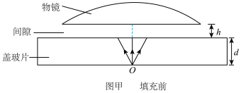
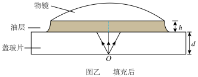
(1) 求未滴油时，$O$ 点发出的光在盖玻片的上表面的透光面积（结果保留 2 位有效数字）；
(2) 滴油前后，光从 $O$ 点传播到物镜的最短时间分别为 $t_1$、$t_2$，求 $t_2-t_1$（结果保留 2 位有效数字）。
由透明介质制作的两段同心圆弧（半径均为 R，圆心距 OO′=R）组成"凹-凸"光学器件。左侧界面 AF、右侧界面 CH 平行于 OO′，到 OO′ 距离均为 $\frac{\sqrt3}{2}R$。本考法把"圆弧圆心 = 出射光线反向延长线的交点（光线垂直圆弧射出）"、"全反射临界角"、"几何光路长度"三件事综合：先由入/出射几何求折射率 $n$，再判断光在圆弧界面是否全反射，最后用 $t=L/v=L\cdot n/c$ 求光程时间。
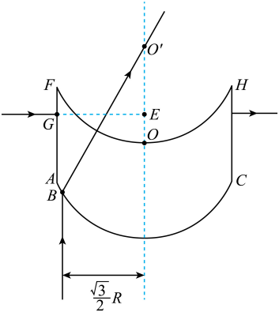
(1) $B$ 点与 $OO'$ 的距离为 $\frac{\sqrt3}{2}R$，单色光线从 $B$ 点平行于 $OO'$ 射入介质，射出后恰好经过 $O'$ 点，求介质对该单色光的折射率 $n$；
(2) 若该单色光线从 $G$ 点沿 $GE$ 方向垂直 $AF$ 射入介质，并垂直 $CH$ 射出，出射点在 $GE$ 的延长线上，$E$ 点在 $OO'$ 上，$O'$、$E$ 两点间的距离为 $\frac{\sqrt2}{2}R$，空气中的光速为 $c$，求该光在介质中的传播时间 $t$。
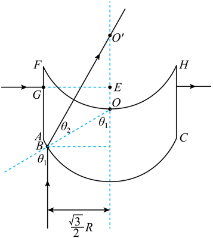
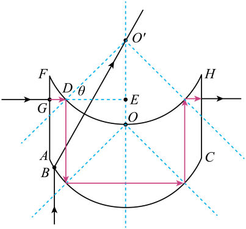
1834 年洛埃利用平面镜获得"双缝干涉"：点光源 $S$ 发出的光一部分直接到光屏，另一部分经平面镜反射后到达光屏。反射光等效于 $S$ 在镜中的虚像 $S'$ 发出的光，$S$ 与 $S'$ 关于镜面对称，组成"双缝"，缝间距 $d=2a$（$a$ 为 $S$ 到镜面垂直距离），与光屏相距 $l$，条纹间距 $\Delta x=\dfrac{l\lambda}{d}=\dfrac{l\lambda}{2a}$。关键：移动平面镜 ⇒ 等效双缝位置变化 ⇒ 条纹间距与位置变化。本考法分析镜面微小倾斜或平移时，$d$、$l$ 是否改变，从而判断条纹是否平移、间距是否变化。
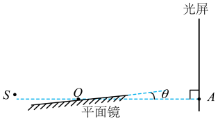
A．沿 $AO$ 向左略微平移平面镜，干涉条纹不移动
B．沿 $OA$ 向右略微平移平面镜，干涉条纹间距减小
C．若 $\theta=0°$，沿 $OA$ 向右略微平移平面镜，干涉条纹间距不变
D．若 $\theta=0°$，沿 $AO$ 向左略微平移平面镜，干涉条纹向 $A$ 处移动
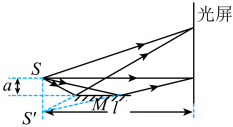
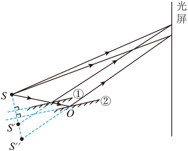
光纤（圆柱形玻璃丝）利用光在侧壁的全反射沿轴向传输。光在侧壁刚好全反射时，对应侧壁入射角 = 临界角 $C$（$\sin C=1/n$），此时该光线到达下端面时与端面法线（竖直方向）夹角 $\alpha=90°-C$ 取得最大值。光线从下端面射出到空气时，由 Snell 定律 $n\sin\alpha=\sin\theta$ 得出射光最大偏角 $\theta$。本考法把"全反射临界角 + 端面折射"与"镜面反射路径的几何关系"组合，应用于反射式光纤位移传感器的测距范围计算。
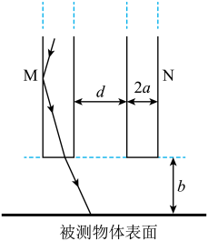
(1) 从 $M$ 下端面出射的光与竖直方向的最大偏角为 $\theta$，求 $\theta$ 的正弦值；
(2) 被测物体自上而下微小移动，使 $N$ 下端面从刚能接收反射激光到恰好全部被照亮，求玻璃丝下端面到被测物体距离 $b$ 的相应范围（只考虑在被测物体表面反射一次的光线）。
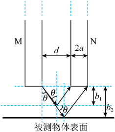
两块平板玻璃之间形成楔形空气薄膜，单色平行光垂直照射时发生等厚干涉：同一级条纹对应相同空气厚度，条纹弯曲处即为厚度突变。典型应用：检测工件平整度、滚珠/垫片直径等微小厚度差。
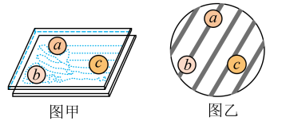
A. 滚珠 b、c 均合格
B. 滚珠 b、c 均不合格
C. 滚珠 b 合格，滚珠 c 不合格
D. 滚珠 b 不合格，滚珠 c 合格
A. 上述现象与彩虹的形成原理相同
B. 光在薄膜的下表面发生了全反射
C. 薄膜上下表面的反射光发生了干涉
D. 薄膜厚度发生变化，硅片总呈现深紫色
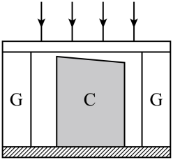
A. 劈形空气层的厚度变大，条纹向左移动
B. 劈形空气层的厚度变小，条纹向左移动
C. 劈形空气层的厚度变大，条纹向右移动
D. 劈形空气层的厚度变小，条纹向右移动